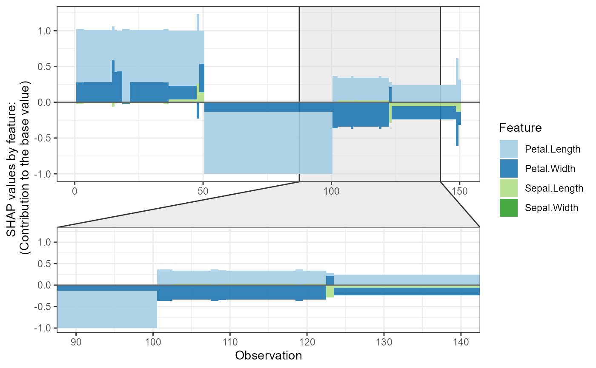
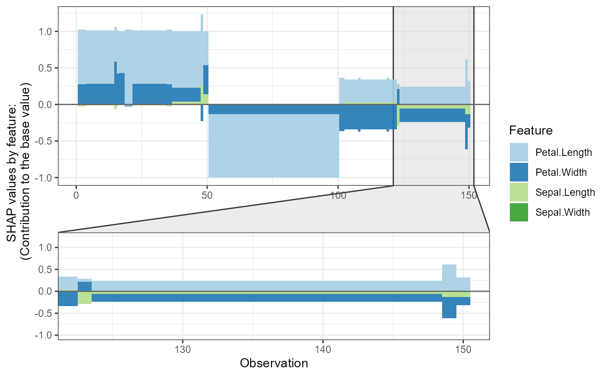
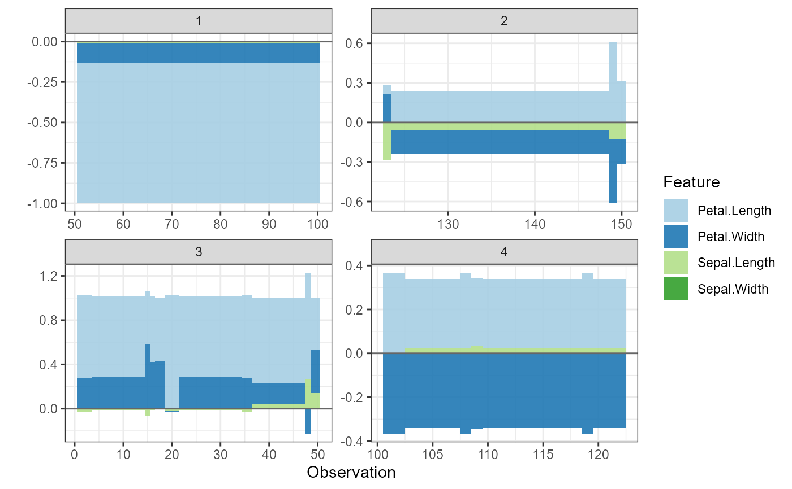

Transforms SHAP values into a format suitable for force plots, which show how features contribute to individual predictions. The function:
Ranks features by importance
Optionally combines less important features into 'rest_variables'
Clusters observations for better visualization
Assigns group labels for faceted plots
Usage
shap.prep.stack.data(
shap_contrib,
top_n = NULL,
data_percent = 1,
cluster_method = "ward.D",
n_groups = 10L
)Arguments
- shap_contrib
shap_contrib is the SHAP value data returned from predict, here an ID variable is added for each observation in the
shap_contribdataset for better tracking, it is created in the begining as1:nrow(shap_contrib). The ID matches the output fromshap.prep- top_n
integer, optional to show only top_n features, combine the rest
- data_percent
what percent of data to plot (to speed up the testing plot). The accepted input range is (0,1], if observations left is too few, there will be an error from the clustering function
- cluster_method
default to ward.D, please refer to
stats::hclustfor details- n_groups
a integer, how many groups to plot in
shap.plot.force_plot_bygroup
Examples
# Example: SHAP force plots (stacked bar charts)
# Shows contribution of each feature to individual predictions
plot_data <- shap.prep.stack.data(shap_contrib = shap_values_iris,
n_groups = 4)
#> All the features will be used.
shap.plot.force_plot(plot_data)
#> Data has N = 150 | zoom in length is 50 at location 90.

shap.plot.force_plot(plot_data, zoom_in_group = 2)
#> Data has N = 150 | zoom in at cluster 2 with N = 28.

# Plot all clusters separately
shap.plot.force_plot_bygroup(plot_data)
